20周年回馈社会系列活动
2014年11–12月，时值摩根士丹利中国成立20周年，摩根士丹利北京和上海的员工开展了“回馈社会”的系列活动以庆祝公司进入中国20周年。摩根士丹利中国一直保持着“回馈社会”的公司传统，持续支持中国的慈善项目，定期组织员工志愿活动，鼓励员工积极投入到公司组织的慈善活动中，贡献自己的一份力量。
春苗小花圣诞音乐会（Chunmiao Little Flower）
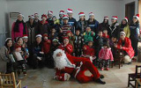2014年12月9日，摩根士丹利北京的部分员工来到位于北京市顺义区的春苗小花学习中心，给这里的小朋友们带来了一场温馨的圣诞音乐会。4位来自中央音乐学院的乐手们以娴熟的演奏技巧为小朋友们演奏了《蓝色多瑙河》、《欢乐颂》等精彩的弦乐四重奏曲目，并与摩根士丹利员工一起合作了表演了圣诞歌曲。“圣诞老人”将摩根士丹利北京员工精心准备的新年礼物派发给小朋友们，与他们提前度过了一个愉快的圣诞节。
爱心盒捐赠（Box of Love）
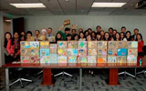摩根士丹利上海的员工历时半个月，为公益组织“米饭妈妈”的爱心盒项目筹得40个爱心盒所需要的善款，并同时自发地动手装满43个爱心盒，为中国贫困地区的残障孤儿提供玩具、文具、糖果等生活学习用品，送上来自摩根士丹利的爱心。
2014年全球志愿者月
截止2014年7月，在2014年的“摩根士丹利全球志愿者月”中，百名中国大陆员工在摩根士丹利的号召下，参加慈善活动的时间总计达1838小时，。这项“摩根士丹利全球志愿者月”活动是摩根士丹利在全球范围内的活动，旨在加强员工参与、履行公司对员工志愿活动的承诺，员工积极投入到公司组织的慈善活动中，贡献自己的一份力量。在2014年度的“摩根士丹利全球志愿者月”中，中国大陆员工们开展了与春苗小花关爱系列活动、北京儿童医院慰问活动、心连心礼包捐赠活动以及金羽翼残儿艺术展等。
春苗小花关爱系列活动（Chunmiao Little Flower）
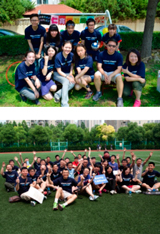2014年6-7月，摩根士丹利大陆员工开展了丰富多彩的活动为春苗小花关爱项目尽自己的一份力量。6月至7月间，摩根士丹利上海和北京的员工举办为春苗小花的筹款活动，总共筹得善款80,000元。其中摩根士丹利上海的300名志愿者加入到筹款的活动中，他们不仅组织和参与了包括足球、篮球和田径等多项竞赛，还作为捐款人献出自己的爱心。6月14日，20名来自摩根士丹利北京的员工参加了春苗小花的运动会，在运动会上，志愿者们或担任裁判或与孩子们一起比赛，享受运动带来的乐趣。两地为春苗小花关爱项目筹款活动是今年“摩根士丹利全球志愿者月”最为重要的活动，也是小花关爱项目的系列活动的高潮。
北京儿童医院慰问活动
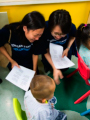2014年6月23日，带着对孩子们的关爱，摩根士丹利20名员工来到了北京儿医院。员工为孩子们带去了书和玩具，并且与孩子们一起做游戏、读书、唱歌。这是摩根士丹利连续第六年探望儿童医院的孩子们。同时在23至27日期间，摩根士丹利的志愿者们在儿童医院的门诊楼的咨询处帮助护士向前来咨询的病人和家长进行导医。
心连心礼包捐赠
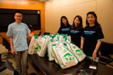今年六一儿童节前夕，河南省上蔡县艾滋病村的180多个孩子们陆续收到摩根士丹利北京和上海员工们的礼物，这些礼物由志愿者们先进行分类、整理，最后分装在各个礼包内通过邮局寄给孩子们。
Eyes on Shanghai
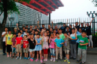
今年7月,30名摩根士丹利上海的员工带着20多名久牵学校的同学们来到中华艺术宫参观游览。在游览中，同学们不仅感受到展品的精美绝伦，还学会用相机拍摄出他们眼中的中华艺术宫，发现上海的美。同学们的摄影作品被影印装裱出来，展示在摩根士丹利上海办公室和久牵学校中。
金羽翼残儿艺术展
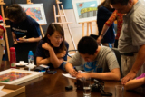6月12日，摩根士丹利北京办公室迎来了金羽翼的五位自闭症儿童，这里正在举办金羽翼自闭症儿童艺术展。孩子们的才艺和画作赢得了志愿者们的赞赏。 摩根士丹利的志愿者们希望能够长期帮助自闭症儿童进行康复性训练。

2013年全球志愿者月
截止2013年7月，在2013年的“摩根士丹利全球志愿者月”中，百名中国大陆员工在摩根士丹利的号召下，积极参与志愿者活动、贡献自己力量。这项“摩根士丹利全球志愿者月”活动是摩根士丹利在全球范围内的活动，旨在加强员工参与、履行公司对员工志愿活动的承诺。在2013年度的“摩根士丹利全球志愿者月”中，中国大陆员工们开展了微笑活动、北京儿童医院慰问活动、River of Hearts Sorting Party、“微笑活动”慈善拍卖会、关爱农民工子女等活动。
微笑行动（Operation Smile）
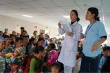2013年6月，摩根士丹利大陆员工以不同形式为中国农村家庭唇裂和语言障碍儿童筹集手术基金。其中，摩根士丹利北京50名员工以步行5公里马拉松的形式参与此公益活动；摩根士丹利上海员工则在公司举行了慈善拍卖活动，全体员工都积极参与并纷纷献出爱心，义卖的物品均来自员工个人，义卖所得的全部善款都将作为支持“微笑行动”的专用款项。同时公司还捐赠了与员工筹款额相当的金额，总共筹集善款1,8000美金作为手术基金捐献给Operation Smile机构。
北京儿童医院慰问活动
2013年6月18日，带着对孩子们的关爱，摩根士丹利15名员工来到了北京儿童医院。员工为孩子们带去了书和玩具，并且与孩子们一起做游戏、读书、唱歌。这是摩根士丹利连续第五年探望儿童医院的孩子们。
River of Hearts Sorting Party
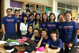今年6月摩根士丹利10名上海员工参与了River of Hearts Sorting Party组织的为捐赠物资分类打包活动。摩根士丹利员工和其他志愿者同心协力把收到的捐赠物资包括衣物、玩具等进行筛选、整理、分类、装箱、贴标签、打包，并且还参与了清运剩余物资的工作。经过长达6小时的工作，数箱物资被整理完毕，装箱物资将由工作人员分配寄送到全国贫困地区。
关爱农民工子女
今年7月，15名摩根士丹利上海员工带领久牵学校的同学们到上海野生动物园参观。同学们在活动中不仅观赏了野生动物，还在员工的耐心教学下学会了使用相机，并拍出了许多富有创意的照片。上海全部员工对这些照片进行投票并选出前十名，并联合久牵学校对获奖同学进行了荣誉表彰。
2012年全球志愿者月
截止到2012年7月，在2012年的“摩根士丹利全球志愿者月”中，百名中国大陆员工在摩根士丹利的号召下，积极参与志愿者活动、贡献自己力量，该区域员工志愿者团体参加慈善活动的时间总计达176,000小时，为公司创造了新的记录。这项“摩根士丹利全球志愿者月”活动是摩根士丹利在全球范围内的活动，旨在加强员工参与、履行公司对员工志愿活动的承诺。在2012年度的“摩根士丹利全球志愿者月”中，中国大陆员工们开展了北京儿童医院慰问演出、为盲人讲电影、中国慈善运动会、北京儿童医院眼科中心志愿者服务等活动。
北京儿童医院慰问演出
摩根士丹利40名员工，先后于2012年5月30日、2012年6月15日来到了北京儿童医院探访住院的孩子们，并组织了一场快乐的联欢活动。员工志愿者们为孩子们带来了书和玩具，和孩子们做互动游戏，还特意为孩子们组织乐队为其表演。孩子们在活动中十分开心，脸上所洋溢出的幸福笑容，让所有的志愿者们倍感欣慰与感动。
为盲人讲电影
 2012年6月30日，10名摩根士丹利员工志愿者前往北京市西城区参加盲人讲电影志愿者活动，在活动中志愿者为盲人朋友们简读本周热点新闻、通过志愿者的自我介绍，志愿者与盲人朋友们建立起了良好的沟通，增进了感情、随后志愿者为盲人朋友们进行了长达近2小时的电影讲解，现场气氛十分温馨。
2012年6月30日，10名摩根士丹利员工志愿者前往北京市西城区参加盲人讲电影志愿者活动，在活动中志愿者为盲人朋友们简读本周热点新闻、通过志愿者的自我介绍，志愿者与盲人朋友们建立起了良好的沟通，增进了感情、随后志愿者为盲人朋友们进行了长达近2小时的电影讲解，现场气氛十分温馨。
慈善运动会
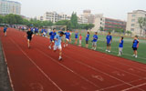2012年6–7月，近百名来自北京和上海的摩根士丹利员工志愿者参加了公司举办的慈善运动会，共筹集善款8万元人民币，为上海外来务工人员子弟学校捐款建设小型图书馆。本届运动会包含多种比赛，包括团体跳绳比赛、个人跳绳比赛、跳远比赛、投篮比赛、团体接力赛、运球跑比赛、拔河比赛、卡拉OK比赛、团体保龄球比赛等。此次活动既让员工们展现了自己的才能，同时又提供了全新的平台让员工有机会参与到慈善中来，为需要帮助的人献出自己的一份力量，得到了参与者们一致的好评。
北京儿童医院眼科中心志愿者服务
2012年7月21-22日，数名摩根士丹利员工志愿者参加了北京儿童医院眼科中心志愿者服务活动，活动主要的内容为摩根士丹利员工志愿者引导患儿进入分诊室就医、诊疗处为患儿验光测视力、在配镜服务中心协助患儿选择眼镜等。服务过程无不体现志愿者对患儿的关怀和爱护。
2011年全球志愿者月
截止2011年6月，摩根士丹利在亚太地区共举办了136项志愿服务活动。2011年的“摩根士丹利全球志愿者月”中，该区域的员工志愿者团体参加社区服务的时间总计达9,252小时，比去年提升了49%。在中国大陆，员工们开展了包括微笑行动(Operation Smile)、北京儿童医院慰问演出、上海义卖、支持“根与芽”内蒙古千树计划等活动。
北京儿童医院慰问演出
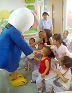39名来自投行部、固定收益部、公司管理部的员工志愿者参与了2011年北京儿童医院志愿服务活动，为80多名心脏病患儿带去图书和玩具，并与他们做游戏、观看乐队表演。摩根士丹利亚太区联席CEO兼中国区CEO、董事总经理孙玮女士也投入到慰问北京儿童医院患儿的活动中来，她表示“孩子们跟我们一起做游戏看表演，收到我们员工捐赠给他们的玩具和图书，看到他们脸上洋溢着幸福的笑容我们很欣慰。这已经是摩根士丹利连续第三年来到北京儿童医院与孩子们共度，我们会继续致力于社区活动并回报社会”。北京儿童医院的代表庞昌生也在此对摩根士丹利长期以来的支持表示感谢。
微笑行动(Operation Smile)
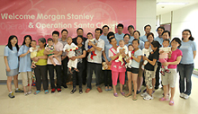6月，摩根士丹利员工志愿者参观了杭州微笑行动慈善医院，向医院患有唇裂和语言障碍的病患儿童捐献了玩具，向15名来自贫苦家庭的病患儿童伸出援助之手。微笑行动是Operation Santa Claus圣诞老人行动的一部分，微笑行动预计将为300名杭州地区患有唇裂的儿童提供手术支持。
上海慈善义卖
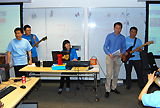摩根士丹利上海员工举行了一场全公司的大型慈善义卖活动，义卖的物品全部来自于员工个人，其中甚至包括一场由员工参与及表演的小型慈善音乐会。最终义卖共筹得款项人民币63,703元，所有善款捐往云南农村希望小学和上海的致康园脑瘫儿康复中心。
“根与芽”内蒙古千树计划
摩根士丹利上海员工今年加入了支持“根与芽”内蒙古千树计划的活动，在工作区设置募款箱募集千树计划善款。最终募集善款人民币55,000元，可用来在内蒙古种植2,200棵树木，一个在昆仑沙漠的“摩根士丹利”森林就此形成。“根与芽”是国际性的环保项目，旨在推动不同文化之间的互动，以及促进全社会对环境的关注和对他人的关爱。
2010年全球志愿者月
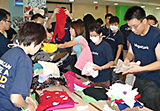中国去年共举办了超过20项志愿服务活动，仅仅在我们的办公室里就有超过400名的员工志愿者。在2010年6月“摩根士丹利全球志愿者月”中，全球员工志愿者团体参加社区服务的时间总计达131,247小时。这些活动包括为贫困县的儿童捐赠衣物，在北京儿童医院教授英语，在上海探访脑瘫儿童，孤儿院探访，陪伴孤寡老人等活动。
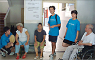在筹款资助慈善项目方面，中国大陆和香港地区的员工在2010年4月共募捐到54万人民币（约7万美金）用来帮助青海玉树地震灾区的受灾者。所得款项为超过2500个受难家庭提供了应急物资，包括药品，衣物，发电机，卫生用品等。我们还资助了中国社会工作协会以及儿童希望基金会对他们的全面心理辅导。
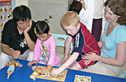另外，公司的员工也通过猜谜晚会，慈善拍卖和义卖会的形式将筹到的善款通过宋庆龄基金会帮助治疗小儿白血病，通过心连心和儿童希望基金会资助十个以上挽救生命的心脏手术。慈善委员会也会向云南的小学捐赠空调。
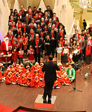同时，2010年成为香港迄今为止募捐最成功的一年，一共为Operation Santa Claus圣诞老人行动，Operation Smile微笑行动以及另外三家慈善机构（香港保护儿童会，生命小战士会以及阅读室）共筹集到220万港币（合29万美金）。2010年香港龙舟队代表了12个分区参加了一年一度的香港龙舟赛，并给香港保护儿童会筹集到超过25万港币（3万2千多美金）。在世界杯期间，摩根士丹利也举办了第一场慈善足球赛。这次跨部门的足球慈善赛给“突破行动”（OB）一个给当地弱势青少年提供体育项目的慈善机构共筹集到15万港币（1万9千多美金）。2010年11月，投行业务部的员工参加了一年一度的香港乐施会100公里竞走，获得了第七名，并给“乐施会”一个独立发展的，致力于在发展中国家消除贫穷，以及灾害救助的人道援助机构募捐到124,534元港币（1万6千美金）。
2009年全球志愿者月
每年6月是“摩根士丹利全球志愿者月”，贯穿全月，摩根士丹利将以团体或个人的形式举办一系列志愿者活动，鼓励员工积极参与、贡献自己的力量。这项摩根士丹利全球范围内的活动，旨在加强员工参与、履行公司对员工志愿活动的承诺。去年6月，公司的全球员工志愿者团体参加小区服务的时间总计达41,000 小时。今年，摩根士丹利的目标是让每一个员工都有机会在志愿者月期间贡献至少一个小时。我们相信，每人一小时，世界大不同！
北京儿童医院联欢活动
| 6月20日，摩根士丹利北京代表处的近20名员工来到北京儿童医院血液肿瘤中心，为在这里接受治疗的小朋友们组织了一场快乐的联欢活动。员工志愿者们为孩子们带来了玩具，和他们一起画画、做互动游戏，而小朋友们也准备了精彩的节目，载歌载舞，为大家带来了惊喜与快乐。 | 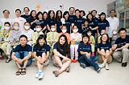 |
摩根士丹利参与“阳光微笑”全家一起献爱心
| 6月20日，摩根士丹利北京代表处的近20名员工来到北京儿童医院血液肿瘤中心，为在这里接受治疗的小6月20日，摩根士丹利上海代表处的近50名员工作为志愿者，在置茂行中心公园参加了一场“阳光微笑”全家一起献爱心活动。此次活动获得了巨大的成功，为上海浦东新区特殊教育学校筹得善款共计65,000元。在活动中，摩根士丹利员工志愿者们积极参加了售卖爱心奖券和饮用水、以及爱心义卖等活动，并带领20名来自该校的听力有障碍的孩子在现场的游乐设施上尽情游戏，并向他们赠送了文具，让这些孩子们度过了充满“阳光微笑”的一天。 | 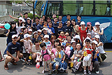 |
为捐助衣物分类打包
| 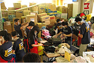 | 6月6日，近50名摩根士丹利上海办公室的员工来到耀中国际学校浦东分校，参加了由Rivers of Hearts组织的慈善活动。摩根士丹利员工和其它志愿者一起将由志愿者捐献的衣物进行整理、分类、打包和标记。经过一天的辛勤劳动，有近400箱各类衣物及文具被整理完毕并发往四川绵阳。10天后，其中大部分的衣物及文具将到达距绵阳15公里的一所中学的400名教师及学生手里。 |
世纪公园清理活动
| 7月4日，摩根士丹利上海近40名员工来到了浦东世纪公园，冒着近37度的酷暑，在园区内拾捡被随意丢弃在路上及草坪中的垃圾。同时，摩根士丹利的员工还向公园内的游客宣传不随地乱扔垃圾，提倡保护公园内环境。 |
摩根士丹利携手北京儿童医院，构筑全球儿童健康联盟
2009年1月13日，摩根士丹利宣布北京儿童医院加入摩根士丹利全球儿童健康联盟。这一联盟中还包括摩根士丹利纽约长老教会儿童医院和伦敦大奥蒙德街儿童医院。
“三十多年来，摩根士丹利一直致力于儿科医疗领域的捐助项目，期望能够帮助使更多儿童拥有健康。” 摩根士丹利董事长兼首席执行官麦克先生表示，“此次与北京儿童医院携手，是我们首次在亚洲与世界级一流水准的医院展开这样规模的合作，它使摩根士丹利在全球儿童健康领域的联盟进一步扩展，使我们得以为儿科医疗的发展和完善做出更多贡献。”
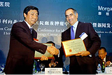作为摩根士丹利全球儿童健康联盟的合作方，北京儿童医院将利用摩根士丹利基金会的捐款支持筹建中的儿童血液肿瘤中心，并由此展开持续五年的合作。
“我们很荣幸能与中国最好的儿科医院合作，为中国儿童谋求长久的福利。”摩根士丹利中国区首席执行官孙玮说，“摩根士丹利希望通过捐赠设备、提供培训机会以及通过促进中、美、英三国儿童医院间的技术和学术交流，对在医院就诊的儿童和他们的家庭带来更多的福音。”
1999年，摩根士丹利首次与纽约长老教会在儿童健康方面建立合作关系，投资建成了占地26.5万平方英尺的摩根士丹利儿童医院。2007年，摩根士丹利宣布第二次合作计划，即与伦敦大奥蒙德街儿童医院合作，为其新门诊大楼的建立募集资金，预计在2012年投入使用。
此外，摩根士丹利还是美国生长发育诊所（Grow Clinics）的第一家大型企业合作伙伴，这些诊所主要为贫困家庭提供医疗服务，帮助他们医治家中患有营养不良并发症的儿童。
摩根士丹利对儿童健康领域的承诺在不断延续，包括公司全球范围内的员工，都在通过公司全球志愿月活动（Global Volunteer Month）、年度呼吁（Annual Appeal）、激励（Inspire）等多项慈善活动中贡献自己的力量。
摩根士丹利香港办事处联合「董事合唱」活动共同为慈善活动募捐165万港元
摩根士丹利香港办事处2007年又一次参加了由南华早报和香港电台于全市范围内举办的“Operation Santa Claus”慈善活动，为当地慈善机构筹得165万港元（折合211,538美元）的善款，募捐数目创下新的纪录，与去年相比增加了逾50%。
善款主要通过两种途径筹得：
一、摩根士丹利驻香港董事参加著名的“摩根士丹利董事合唱”活动所获得的赞助。合唱一年举行一次，以于热闹的购物中心演唱圣诞颂歌为主要形式。
二、通过一个名为“假日挑战”的线上游戏筹款。游戏以赢取摩根士丹利公司提供的奖品为主要目的。
12月14日的董事合唱由摩根士丹利前亚洲首席执行官韩硕澧（Hans Schuettler）主持。在国际金融中心商场内热情的同事、家人、慈善合作伙伴、媒体和购物者面前，摩根士丹利驻香港的董事们演唱了Rudolph、the Red-nosed Reindeer和Jingle Bells等六首脍炙人口的圣诞歌曲。
摩根士丹利所筹得的165万港元捐款将与“Operation Santa Claus”其它慈善活动所得之捐款一起为"Early Start Project”提供资金。 "Early Start Project”由摩根士丹利长期合作伙伴、“Operation Santa Claus”受益人之一的圣雅各福群会创办，主要为社会底层贫困的孩子和他们的家人提供帮助。
摩根士丹利荣膺香港「最佳雇主」
Hewitt Associates 顾问公司(www.hewittasia.com) 主办的2003年「亚洲最佳雇主」竞选最近公布结果。摩根士丹利在香港评选中排名第三，仅次于一家本地公司和一家酒店集团公司，并为唯一入选前十名的金融服务机构。
主办单位向各参与公司抽样选出的员工发出问卷，内容覆盖员工对公司各方面的满意程度，包括工作与个人生活的平衡、工作地点是否安全、福利薪酬、公司治理和组织的整体领导实力等。而评选结果则主要取决于三方面：公司对人员潜力的开发、员工的满意或不满意程度和员工实现公司目标的参与程度。摩根士丹利首席行政官颜丽生女士对获奖感到非常荣幸，并表示将持续检讨和改进公司内部的各项措施，确保公司继续是员工的首选雇主和理想的工作地方。
摩根士丹利获授「商界展关怀」标志公司荣誉
由香港社会服务联会(www.hkcss.org.hk) 主办的第一届「商界展关怀」奖励计划颁奖典礼于2002年12月举行，摩根士丹利荣获「商界展关怀」标志公司。政务司司长曾荫权代表香港特别行政区行政长官出席并主持了仪式。
「商界展关怀」评选活动旨在鼓励工商界与社会服务界结成伙伴合作关系，共同建设一个彼此关怀和具凝聚力的社会。作为良好公司公民的模范，被评为「商界展关怀」标志的工商机构均在以下最少两方面承担了义务：
- 鼓励义务工作 - 鼓励及支持员工参与义务工作；
- 关心员工家庭 - 为员工提供友善的工作环境，关心员工的家庭生活；
- 平等机会和多元化 - 乐于招聘弱势社群，为他们提供就业机会；
- 建立合作伙伴- 与社会服务机构建立伙伴关系，共同策划合作计划；
- 传授知识技术 - 向社会服务机构传授专业的知识和技能；
- 乐于捐助社群 - 为社会服务提供金钱或物资捐助。
在公司的慈善伙伴、专门向年老长者提供援助的伸手助人协会 (www.helpinghand.org.hk) 的提名下，摩根士丹利因实现创新的「长者消闲列车」概念，为香港长者提供免费的流动康乐设施而获选。